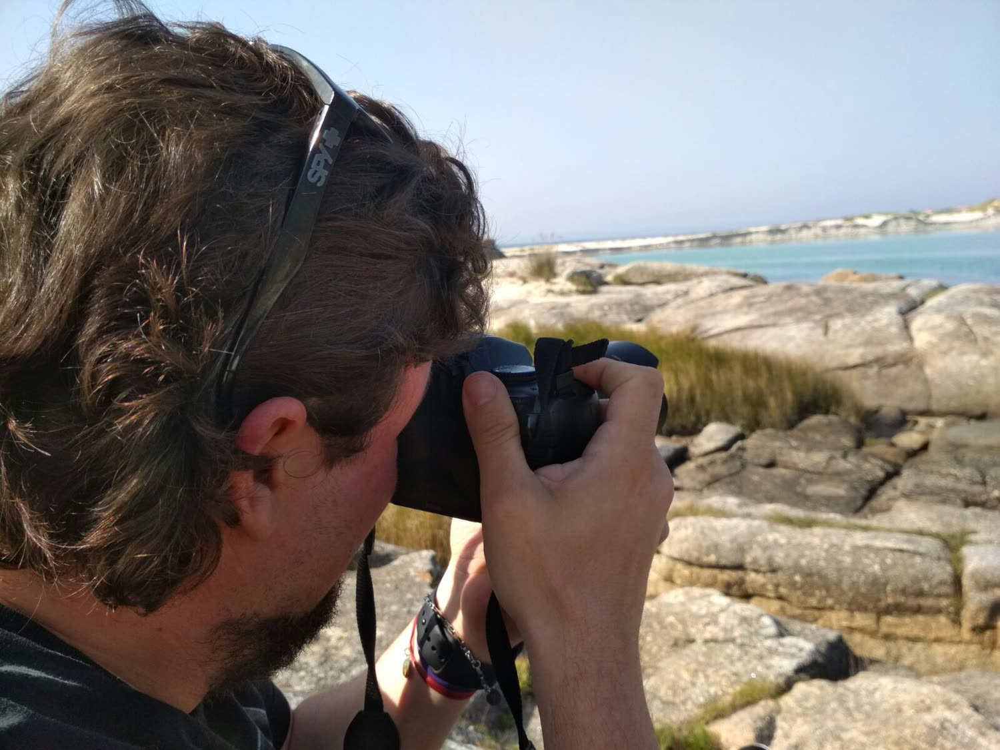

Fotografía arquitectónica, urbana y comercial con visión artística. Cada encuadre, una historia.
Hablemos de tu proyecto →
Soy Guille Angeli, fotógrafo profesional especializado en arquitectura, paisaje urbano y fotografía comercial. Con base en Buenos Aires y proyectos en Europa y Argentina, combino técnica precisa con una mirada artística que distingue cada imagen.
Mi trabajo se enfoca en la geometría, la luz y la narrativa visual — elementos que convierten una fotografía en una herramienta de comunicación poderosa para empresas y marcas.
Capturo la esencia de espacios y estructuras con precisión técnica y sensibilidad artística. Ideal para estudios de arquitectura, inmobiliarias y constructoras.
Imágenes de alto impacto para campañas publicitarias, redes sociales y comunicación corporativa. Tu marca, con la imagen que se merece.
La ciudad como escenario. Retratos de entornos urbanos, street photography y documentación de la vida cotidiana con mirada narrativa.
Entendemos tus objetivos, el estilo de tu marca y los resultados que esperás de las imágenes.
Desarrollamos juntos el concepto estético, la locación, los ángulos y la paleta de la sesión.
Ejecución profesional con equipamiento de alta gama. Atención a cada detalle de luz y composición.
Edición profesional y entrega en los formatos que necesitás, listos para usar en cualquier plataforma.
Cada proyecto es único. Contame qué necesitás y te armo una propuesta a medida en menos de 48 horas.